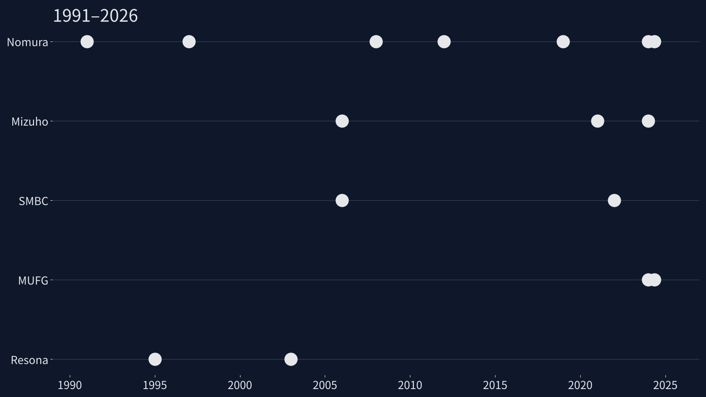
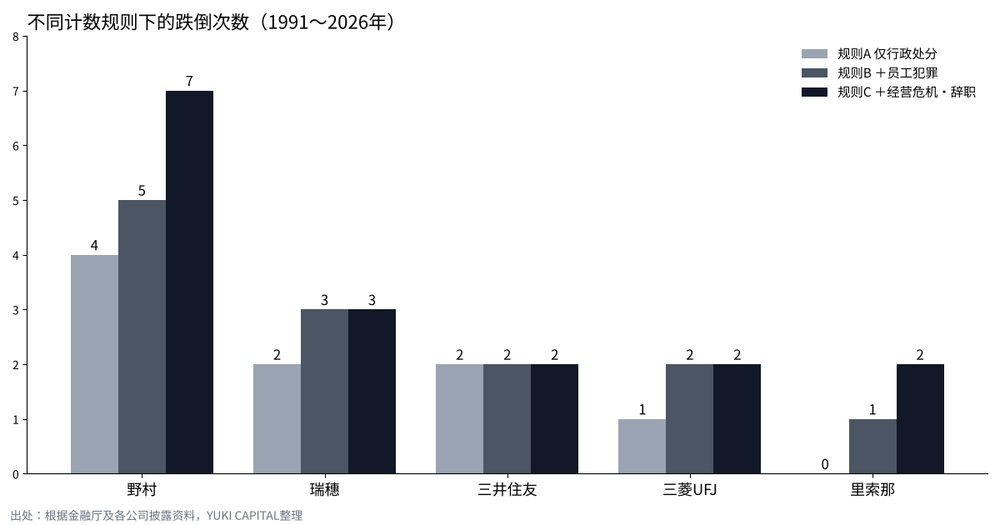
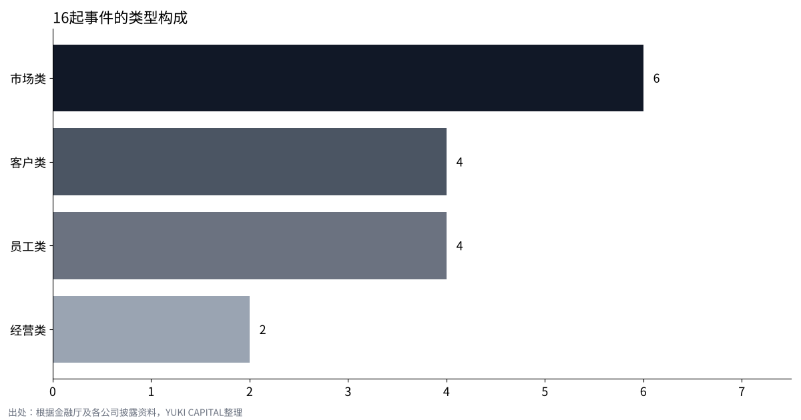

日本的大银行和大券商跌倒过几次？——里索那、三菱UFJ、三井住友、瑞穗、野村35年的丑闻，以及如何选择资金存放处
11月17日，乐天证券宣布，最多约1,125万个账户的登录ID等信息，以及其中最多约447万个账户的姓名、住址、年收入和金融资产等信息，可能已外泄。
每当出现这样的公告，人们都会问：“大机构是否更安全？”然而，日本的大银行和大券商过去也多次受到处分。
本文的问题是：日本五大集团自1991年以来跌倒过几次，存放资产的一方实际受到了多大损失，以及选择存放处应当用什么标准。

- 无论采用三种计数规则中的哪一种，五大集团都至少跌倒过1次；次数最多的野村为4〜7次，最少的里索那也有0〜2次。
- 16起事件中，个人存放的资产真正遭受损失的只有员工犯罪类的3起；在三菱UFJ的保险箱案中，银行截至2025年1月已赔付40件、约7亿日元。
- 2025年春季网络券商等发生的非法访问，三个月内达3,312起、违规卖出506亿日元；损失的量级与其说取决于是否是大机构，不如说取决于账户是否难以被盗用。
问题与背景
本文所说的丑闻，是指违反法律或规则的行为，或与之相当、损害社会信任的行为。行政处分是指金融厅等机构以停业命令、业务改善命令、课征金缴纳命令等方式责令企业整改。
对象是作者本人作为存放处使用、并希望在本文中核对其历史的五大集团：里索那、三菱UFJ、三井住友（含SMBC日兴证券）、瑞穗、野村。期间为从1991年证券公司亏损补偿曝光起，到2026年11月为止约35年。
2026年秋，乐天集团接连发布信息外泄公告：10月26日乐天旅行最多累计约350万件，10月31日乐天证券数字特典公司债购买者累计362件，11月17日乐天证券最多约1,125万个账户。要思考资金是否会从网络渠道流向大机构，首先需要把大机构自身的记录排列出来。
也要确认保护存款人的制度。银行破产时，存款保险制度对非结算用存款，按每家金融机构每位存款人保护本金1,000万日元及其利息[14]。券商有义务将客户资产与自有资产分开管理，若因违反分别管理而无法返还，日本投资者保护基金对每人补偿最多1,000万日元[15]。
但这两项制度都是针对“公司倒闭”的准备。员工犯罪、账户被盗用后的违规交易，都在制度补偿之外，要依靠公司的判断和实力。本文排列各公司的过往记录，正是为了看清这种制度之外的实力。
数据与方法
资料为金融厅和证券交易等监视委员会的公告、各公司披露的处分与防止再发资料、财务省发表的解说论文以及各公司的综合报告[1]〜[10]。新闻报道仅用于核对年份和件数，没有一手资料的数字不予采用。
方法有两个。第一，将五大集团的事件按年份排列，分为四类：对客户不利的销售（客户类）、损害市场公正的行为（市场类）、员工犯罪或不正当行为（员工类）、系统或经营的崩溃（经营类）。
第二，由于把什么算作“跌倒”会改变结果，本文将计数规则变动三种：规则A＝仅行政处分；规则B＝A加上员工犯罪；规则C＝B加上经营危机和高管引咎辞职。
结果
排列出的事件共16起，主要事件列表如下。
| 年份 | 集团 | 事件 | 类型 |
|---|---|---|---|
| 1991 | 野村 | 对大客户的亏损补偿曝光，社长引咎辞职[3] | 客户类 |
| 1995 | 里索那（原大和银行） | 纽约分行约11亿美元账外亏损，次年退出美国[9] | 员工类 |
| 1997 | 野村 | 向总会屋输送利益，社长再次引咎辞职[3] | 市场类 |
| 2003 | 里索那 | 注入公共资金约1兆9,600亿日元，实质国有化[8][9] | 经营类 |
| 2006 | 三井住友 | 利率掉期销售滥用优势地位，被责令停止销售并改善业务[4] | 客户类 |
| 2012 | 野村 | 围绕公开增发信息的内幕交易，业务改善命令[2] | 市场类 |
| 2019 | 野村 | 向外部传递东证市场分区的讨论信息，业务改善命令[2] | 市场类 |
| 2021 | 瑞穗 | 一年内8次系统故障，业务改善命令及外汇法纠正措施命令[5] | 经营类 |
| 2022 | 三井住友（SMBC日兴） | 大宗配售中的操纵市场，业务改善命令及部分停业[6] | 市场类 |
| 2024 | 三菱UFJ | 银行与证券之间共享客户非公开信息，业务改善命令[7] | 客户类 |
| 2024 | 野村 | 操纵长期国债期货，课征金2,176万日元[1] | 市场类 |
| 2024 | 三菱UFJ | 前员工从保险箱中盗窃，截至2025年1月赔付40件、约7亿日元[10] | 员工类 |
表外还有野村2008年前员工的内幕交易[2]和2024年前员工在客户家中的抢劫杀人未遂，以及瑞穗2006年的个人信息外泄和2016〜2019年前员工从保险箱中盗窃。
将计数规则变动三种后，各集团的次数如下。

按类型划分，市场类最多，为6起；员工类和客户类各4起；经营类2起。瑞穗2006年的个人信息外泄计入客户类。

敏感性分析
按规则A，野村4次、三井住友2次、瑞穗2次、三菱UFJ1次、里索那0次。按规则B，野村5次、瑞穗3次、三井住友2次、三菱UFJ2次、里索那1次；按规则C，野村7次、瑞穗3次、三井住友2次、三菱UFJ2次、里索那2次。
不同规则之间差距最大的是野村，A与C相差3次。这取决于是否计入1991年和1997年高管的引咎辞职，也是在判断旧事件应在多大程度上计入对今天公司的评价。无论哪种规则，野村都最多。另一方面，里索那在规则A下为0次，在规则C下则与三井住友、三菱UFJ持平。“最安全的大机构”会随计数方法而变化。
次数多并不直接等于存放一方的损失。野村的4起市场类事件损害了市场公正和发行企业的信任，但并没有减少个人账户的资产。里索那2003年的情况下，存款也由公共资金保住了。
讨论
存放一方的资产真正遭受损失的，只有员工类的3起：三菱UFJ和瑞穗的保险箱盗窃，以及野村前员工的抢劫。三菱UFJ截至2025年1月10日已赔付40件、约7亿日元[10]，损失由公司承担。
网络渠道发生的损失，类型和量级都不同。2025年2月至4月约三个月内，6家券商的非法访问达3,312起，违规卖出506亿日元、买入448亿日元[11]。员工犯罪是一件一件发生的，而盗用会一次性集中到系统的薄弱处。
也有相反的看法：大机构的丑闻损害的是市场公正，即使个人损失很小，企业文化的问题是一样的。野村在1991年和1997年因同类问题社长辞职，2012年和2019年又因信息处理受到命令[2][3]。SMBC日兴2022年的处分，是其2009年加入三井住友旗下后的第4次行政处分[13]。
那么，存放的一方应该用什么标准？从16起事件倒推，要看的点可以归结为三个。第一，出事时有没有赔付的实力，可以用自有资本和利润的规模衡量。第二，能否及早发现员工不正当行为的机制；保险箱事件后，日本全国银行协会修改了规定范本，禁止存放现金[16]。第三，阻止盗用的机制：能否关闭网络渠道，改为通过电话和书面确认。
本文有其局限。统计的只是已公开的案件，不包括未曝光的不正当行为。由于限定在五大集团，也没有与网络券商或其他大机构比较。检验的标准是：乐天证券一案的赔付会覆盖到什么程度，利用此次外泄信息的诈骗会发生多少。如果赔付广泛、二次损失很少，那么与网络渠道的差距就可以说不大。
结论
无论计数方法如何变化，五大集团都至少跌倒过1次。是大机构，并不意味着不会发生丑闻。
但造成个人资产损失的类型仅限于员工犯罪，在赔付情况明确的案件中，损失由公司承担。与其以丑闻次数为标准，不如以出事时的赔付实力和阻止盗用的机制为标准，这更接近存放一方的实际风险。
我是这样看的
我公司的主要往来银行是里索那，因为有长期往来而选择了它。我选择银行和券商时最先看的是：规模是否够大、是否是行业第一，其次是有没有往来关系。
我不使用乐天证券。个人使用的网络券商是SBI证券，选它是因为好用，但不在那里做大额交易。在存放公司资产的野村，我设置为只能通过电话和邮件下单。大机构也会泄露，但我认为只要必须通过电话和邮件，账户就不容易被盗用。看到这次的公告，我觉得用大机构是对的。
来源
- 野村控股・野村证券「关于金融厅对野村证券的课征金缴纳命令」2024年10月31日 https://www.nomuraholdings.com/jp/news/nr/holdings/20241031/20241031.pdf
- 金融厅「关于对野村证券株式会社及野村控股株式会社的行政处分」2019年5月28日 https://www.fsa.go.jp/news/30/shouken/20190528-2.html
- 野村控股「关于金融厅对野村证券的行政处分」2012年8月3日 https://www.nomuraholdings.com/jp/news/nr/holdings/20120803/20120803.pdf
- 三井住友金融集团「关于对株式会社三井住友银行的行政处分」2006年4月27日 https://www.smfg.co.jp/news/pdf/j20060427_01.pdf
- 瑞穗金融集团・瑞穗银行「关于金融厅及财务省的行政处分」2021年11月26日 https://www2.jpx.co.jp/disc/84110/140120211125441559.pdf
- 日本评级研究所「SMBC日兴证券受到行政处分」2022年10月7日 https://www.jcr.co.jp/download/7e75970c7184df511b2d5a7db74b8724497a4e271bc27a2dca/22d0853.pdf
- 三菱UFJ金融集团等「关于金融厅的行政处分」2024年6月24日 https://www2.jpx.co.jp/disc/83060/140120240624535223.pdf
- 服部孝洋「我国的公共资金注入及临时国有化方案」《ファイナンス》2023年4月号（财务省） https://www.mof.go.jp/public_relations/finance/202304/202304i.pdf
- 里索那控股「综合报告2024」 https://kitaishihon.com/company/8308/ir-library/10295/download
- 三菱UFJ银行「关于前员工不正当行为的应对情况及防止再发措施」2025年1月16日 https://www.bk.mufg.jp/news/admin/news0116.pdf
- Lifehacker Japan（引用金融厅统计）2025年4月 https://www.lifehacker.jp/article/2504-how-to-prevent-fishing-fraud/
- 证券交易等监视委员会「关于建议对野村证券操纵长期国债期货下达课征金缴纳命令」2024年9月25日 https://www.fsa.go.jp/sesc/news/c_2024/2024/20240925-1.html
- 时事通信「恢复信任道路艰难＝第4次再发―SMBC日兴」2022年11月5日 https://www.sbbit.jp/article/refers/98762
- 存款保险机构「存款保险制度说明」 https://www.dic.go.jp/yokinsha/page_000105.html
- 日本投资者保护基金「补偿对象的客户资产」 https://www.jipf.or.jp/
- Business+IT「三菱UFJ与瑞穗的保险箱盗窃案及修改要点」2025年7月18日 https://www.sbbit.jp/article/fj/168229
图表与插图由YUKI CAPITAL制作
我每天在X上记录数字与判断。